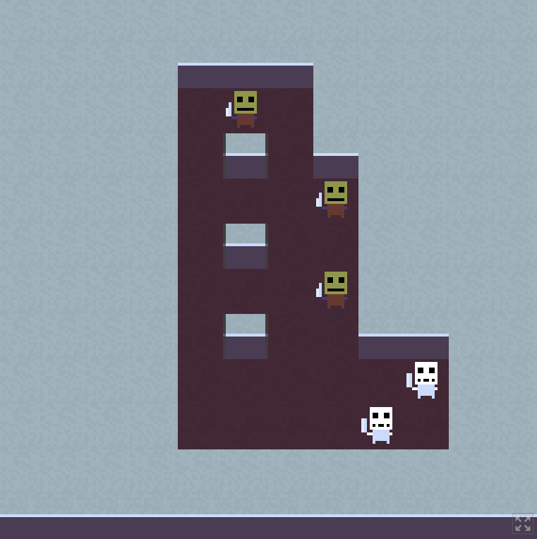
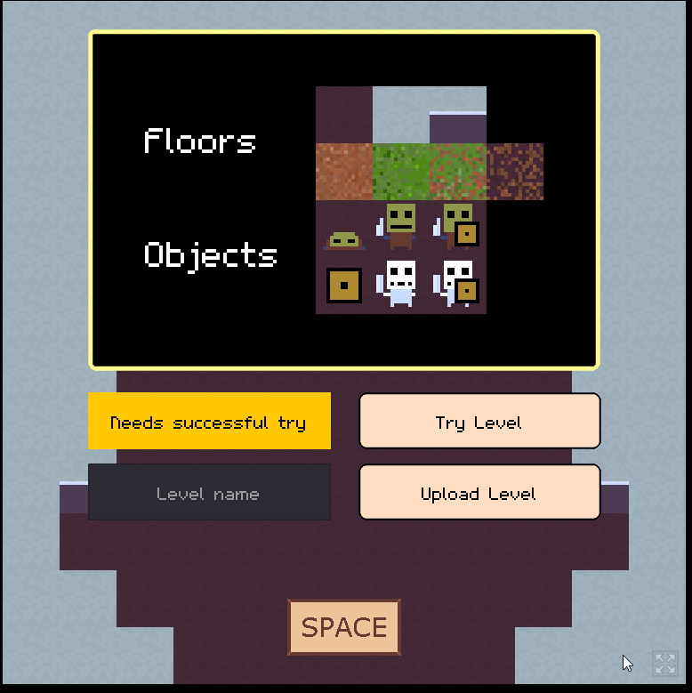
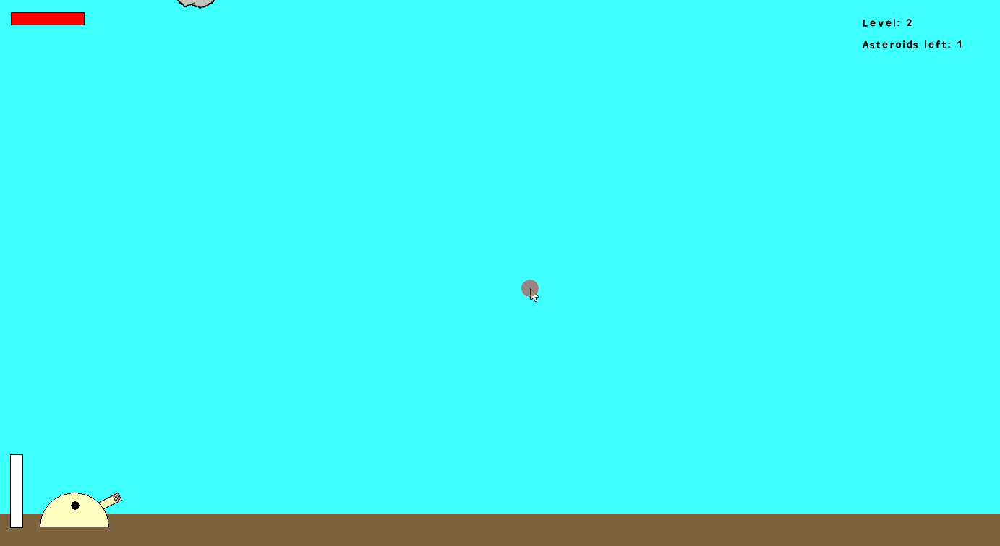
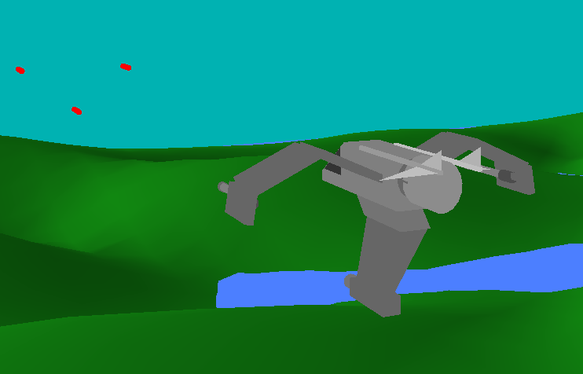

Hi! I have four years experience as a Software and Cloud Engineer. Currently I am a 3D Graphics and AI student. I am seeking a gamedev internship for my university break from 6 June - 1 October 2022.
Contractomaton
Current Unity project. First attempt at 3D. Gameplay loop is for the player to go through procedurally generated rooms to kill enemies and find items to help in further missions. Has pathfinding and some simple AI so that the enemy can break down doors and try to find the player. Producing 3D models and animations in Blender.

Skelemancer
https://skelemancer.itch.io/skelemancerSkelemancer is a 2D puzzle game made in Godot published on Itch. It's got 10 levels, tutorial tips and sprite animations.
It also had a level editor. Users could draw a puzzle. They would then need to complete the level themselves to verify that there is a possible solution. After that, they could upload the level to an AWS s3 bucket. Other users could load the list of levels and play them. Unfortunately, this feature is disabled because I accidentally accrued a large AWS bill and didn't pay it. Oops!
Shepherd
A cute game made in Godot about shepherding sheep from one grassy meadow to another while avoiding or fending off threats. Not finished or published. Has some procedural terrain generation using noise maps and AI for sheep to follow the player around.

Car
Project for learning Godot and some car physics. Swerve through traffic to escape the dragon and avoid driving into the water. Pretty much finished but did not publish.

Nuke Shot
https://skelemancer.itch.io/nuke-shotShoot down the asteroids and save planet earth! A simple game made in GameMaker.
Lunar Launcher
Game made in MonoGame (XNA). Fly through the level avoiding surfaces and enemies.

Wraith
OpenGL university project. Recreated a Wraith from StarCraft by writing out the vertices in C and adding materials. Added controls and leveraged rotation matrices so that the player can fly around with pitch and roll in 3D. Used an elevation map for the terrain and calculated vertex normals for smooth lighting.

Slater
Java AI that plays StarCraft. It competes against other AIs built by hobbyists, researchers and companies including Facebook and Samsung. Here is a blog post about it by a member of the community from its early days. It beats the Blizzard AI. It currently (31/01/2022) has a 45% average winrate against competing AIs.

Digital Art
Not my primary skillset but I am trying to get better at drawing
Current studies
This semester I am studying Deep Learning and 3D Graphics, particularly how to write shaders. I hope this will be useful as I delve into 3D gamedev!
Thanks for looking at my portfolio. Please consider getting in touch at my email or LinkedIn if you'd like to have me on your team!